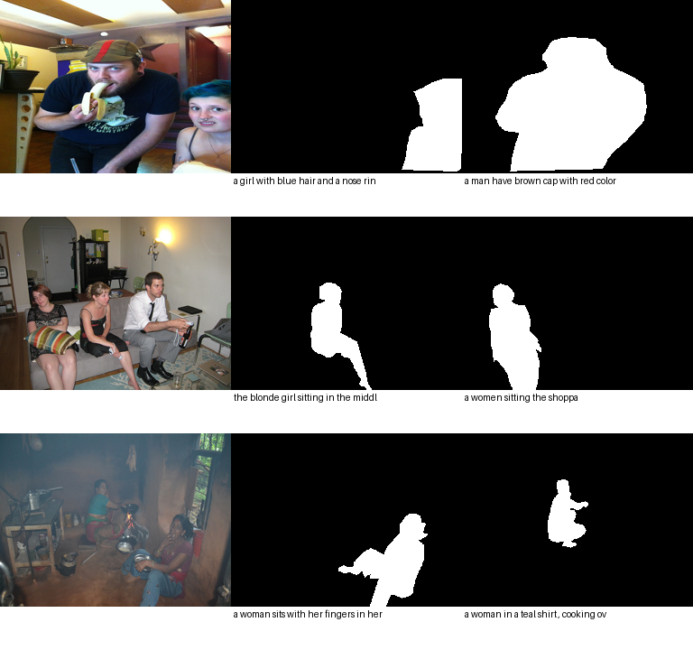

2026-10-03。此页记录启动配置，不代表任务已完成。实际进度见 status.json。状态为 complete 且各随机种子的 complete.json 存在时，才表示训练及其程序内审计完成。
| 项目 | 固定设置 |
|---|---|
| 训练数据 | 512 张图像，1,024 个同类成对实例，1,936 条描述 |
| 开发集 | 64 张独立图像，128 个实例/描述 |
| 保留集 | 另 64 张图像，128 条描述；本轮不评估、不调参 |
| 模型 | 固定版本 Marigold Depth v1.1；rank-4 LoRA，829,952 个可训练参数 |
| 目标 | 二值实例掩码的 VAE 潜变量，单步零信噪比 velocity MSE |
| 更新 | 种子 17、29、43；每个 3,000 次优化器更新，梯度累积 2；共 9,000 次更新 |
| 尺寸及优化器 | 192×256；AdamW，学习率 1e-4，weight decay 0.01，梯度裁剪 1.0 |
| 存档与评估 | 每 100 次保存模型及优化器/RNG 断点；0/500/1000/1500/2000/2500/3000 次评估；只使用最后检查点作为主结果 |
| 执行资源 | 本机 RTX 5060 Laptop；进程存续期间防止系统自动休眠，结束后释放。没有安排关机。 |
冻结配置及源代码哈希 · 数据审计 · 数据准备状态 · 整体研究方案
以下为固定评估点的快照，不是最佳检查点选择，也不是三个种子的最终结果。
| 更新次数 | 平均 IoU | IoU > 0.5 的比例 | 同图两个目标均选对 |
|---|---|---|---|
| 0 | 0.02561 | 0% | 1.56% |
| 500 | 0.000025 | 0% | 0% |
| 1000 | 0 | 0% | 0% |
| 1500 | 0.13140 | 11.72% | 4.69% |
| 2000 | 0.22084 | 20.31% | 15.63% |
第 1000 步的 128 个预测均为空；第 1500 步已恢复部分前景输出，第 2000 步平均 IoU 进一步升至 0.22084，因此不能认定训练永久塌缩。两个目标均选对的比例仍低，尚不能证明可靠的描述条件分割。
固定第 1000 步检查点的诊断中，前 8 条训练及前 8 条开发描述的标签 VAE 往返 IoU 分别约 0.9958 和 0.9943。训练缓存与重新编码的 RGB、掩码、文字一致。模型潜空间误差可以低于纯黑目标潜变量的误差，但解码仍无正值前景，提示潜空间目标和最终分割质量可能不一致；这并未确认唯一原因。抽查存在同实例重复描述，不能当作 16 个独立场景。
诊断原始记录 · 图像、标签和连续预测对照 · 第 1500 步评估
另已冻结并排队一个训练集小实验：从相同第 1000 步权重出发，在 8 张训练图像的 16 个目标上比较原损失与“原损失 + 前景/背景平衡像素损失及 Dice”，每组 128 步。原三种子训练结束且核验通过后才运行；不会使用开发集或保留集，不构成泛化证据。像素损失的梯度方向已通过小型检查，完整 GPU 运行尚待执行。
每张开发图像有两个同类目标，使用相同生成噪声分别输入两个描述。报告每个预测与本目标及另一目标的 IoU、两个目标均被正确选择的比例、正常描述相对交换描述的 IoU 差，以及空描述 IoU。预测同类对象的并集或永远分割同一个对象，不能在“两个目标均正确选择”指标上通过。总体 IoU 与指代能力分别报告。
训练前检查通过：1,920 个图像/掩码文件的哈希核验；训练、开发、保留图像不重叠；最长训练/开发/保留提示为 43 token，未截断；分割与切换指标的反例测试通过。已有通用断点恢复测试验证参数、损失、数据顺序和 RNG 精确恢复，但不自动保证完整扩散训练跨设备逐位确定性。
使用固定版本 RefCOCOg 标注镜像的原始多边形和 COCO 原图。检查了原始 ID、图像尺寸、非空实例掩码及镜像 train/validation 的图像隔离；未验证与最初发布压缩包逐字节等同。为诊断同类对象混淆而筛选了具有两个同类标注实例的图像，因此这是难例富集子集，不能作为完整 RefCOCOg 基准成绩。开发集结果仅供探索，不代表独立确认性证据。
模型从已完成深度适配的生成式主干继续迁移到分割，不等于直接从原始图像生成权重开始，也不等于复现 Vision Banana。当前没有验证图像生成能力保留或条件选择策略收益。
左列为训练图像，右两列为该图两个不同描述对应的真实实例掩码。

云端入口保留：Colab 工程检查笔记本。该链接完成的是环境检查；本轮正式训练实际在本机运行。